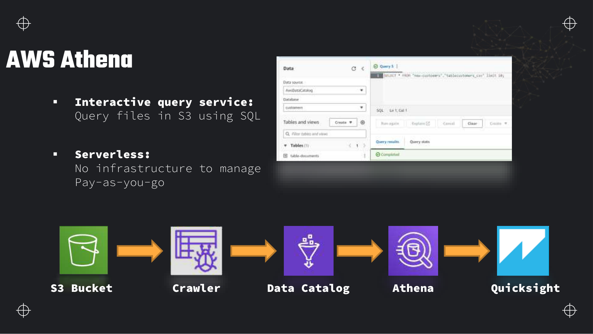
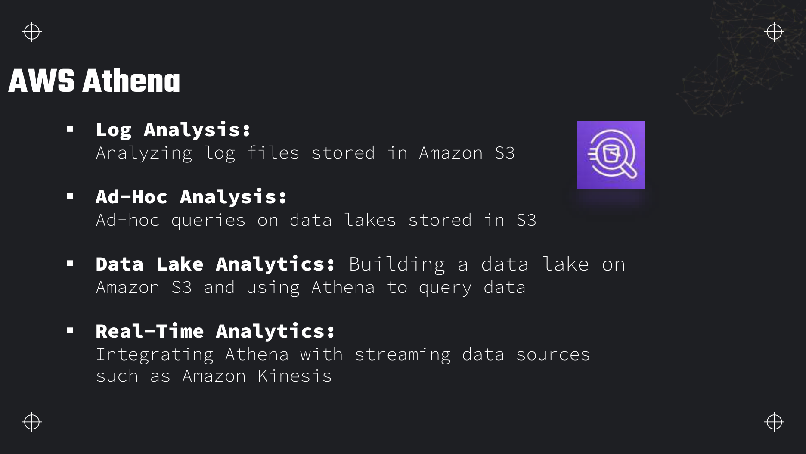
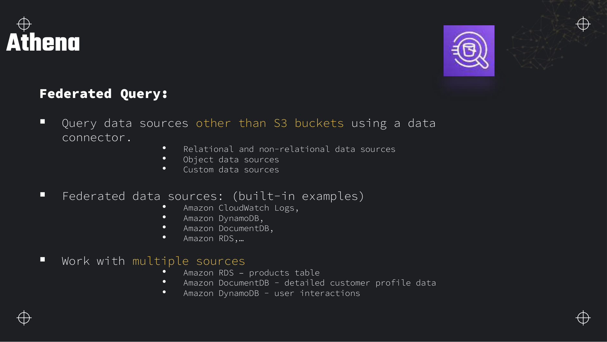
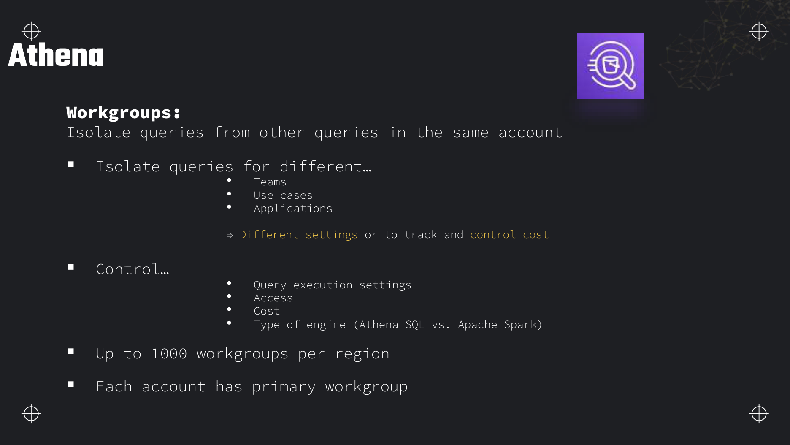
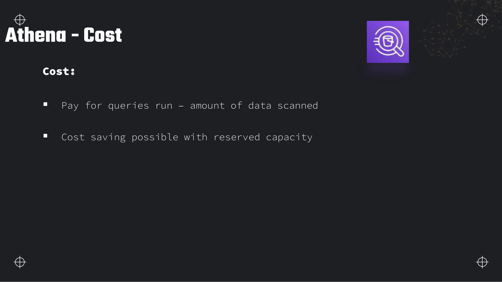
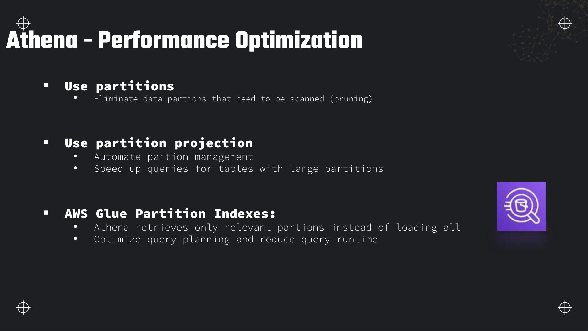
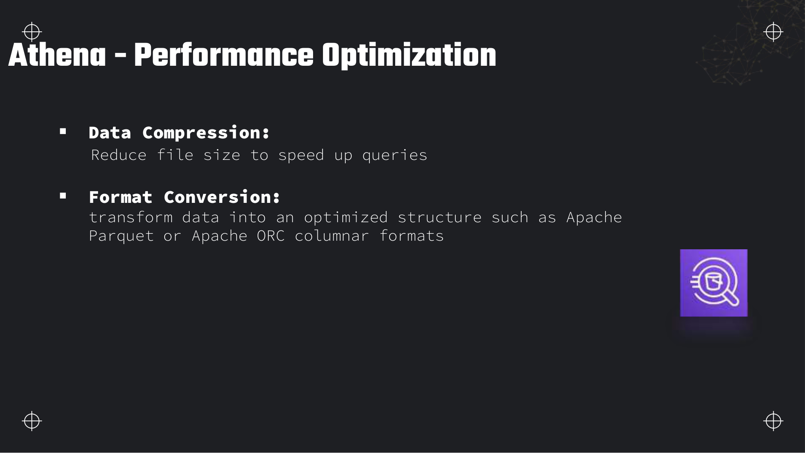
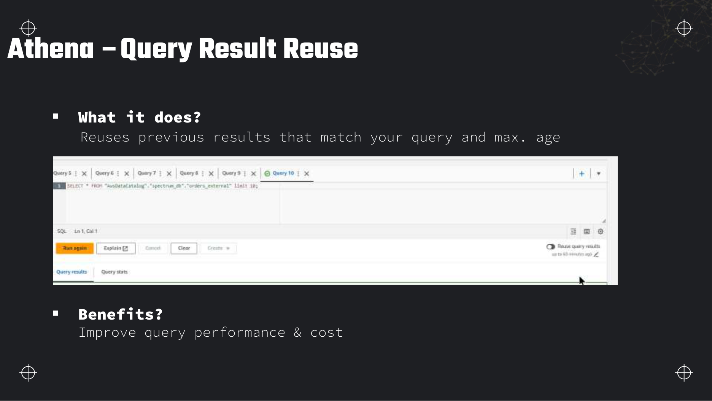
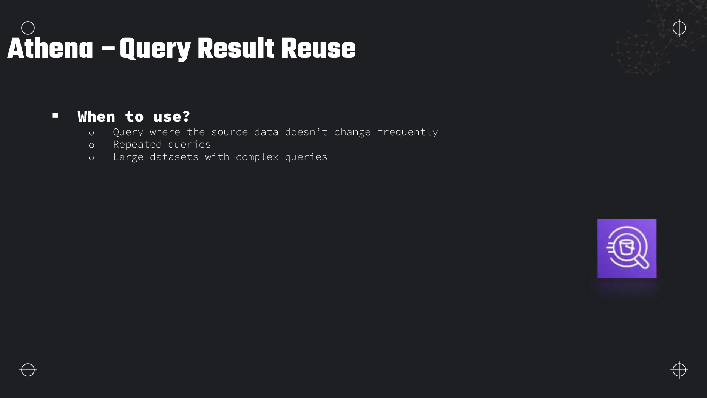

Lectures in this section
Assumes the lab bucket and Glue crawler from Section 2. Sample file: data/customers.csv.
- Athena — serverless SQL on S3 ~8:00 Slides 24–25
- Use cases — logs, ad hoc, lake analytics ~5:00 Slide 26
- Federated queries and data connectors ~7:00 Slides 27–28
- Workgroups — isolation and engines ~6:00 Slides 29–30
- Cost — per TB scanned and capacity options ~6:00 Slide 31
- Performance — partitions, formats, compression ~10:00 Slides 32, 35
- Query result reuse ~5:00 Slides 33–34
Amazon Athena — serverless SQL on S3
Amazon Athena is an interactive query service that runs standard SQL against data in Amazon S3. There is no cluster to provision — you pay per query based on data scanned, and results land in an S3 bucket you designate.

S3 → Catalog → Athena → QuickSight
How Athena executes a query
- You submit SQL in the console, API, or JDBC/ODBC driver.
- Athena reads table metadata from the Glue Data Catalog (database, table, columns, partition list or projection rules, SerDe, input format).
- The query engine (Athena engine version 3, based on Trino) plans the scan — partition pruning eliminates irrelevant S3 prefixes.
- Workers read only the needed objects/ columns from S3, compute the result, and write output to the workgroup's query result location in S3.
- You retrieve rows from the console or the
GetQueryResultsAPI.
External table DDL — pointing SQL at S3
Every Athena table is an external table: metadata in the catalog, bytes in S3. Here is DDL for the lab CSV under raw/customers/:
CREATE EXTERNAL TABLE IF NOT EXISTS dea_lab.customers_raw (
id INT,
name STRING,
age INT,
address STRING,
city STRING,
state STRING,
email STRING
)
ROW FORMAT SERDE 'org.apache.hadoop.hive.serde2.lazy.LazySimpleSerDe'
WITH SERDEPROPERTIES ('serialization.format' = ',', 'field.delim' = ',')
STORED AS TEXTFILE
LOCATION 's3://dea-lab-ab-4821/raw/customers/'
TBLPROPERTIES ('skip.header.line.count' = '1');Replace the bucket name with yours. If a crawler already created this table, compare its schema — crawlers often infer every column as string, which is fine for exploration but weak for aggregations.
Athena use cases

| Use case | What you query | Typical pattern |
|---|---|---|
| Log analysis | CloudTrail, VPC flow logs, ALB access logs, application logs in S3 | Partition by date, use partition projection, query with SQL aggregations |
| Ad hoc analysis | CSV/JSON dumps, one-off investigations | Crawler or manual DDL, SELECT … LIMIT, discard when done |
| Data lake analytics | Curated Parquet in staging/ or curated/ | Partitioned columnar tables, CTAS for transforms, QuickSight on top |
| Near-real-time analytics | Firehose-delivered JSON in S3 | Small files arrive every minute; partition by hour; query recent prefixes |
CloudTrail and VPC flow logs
Athena ships ready-made queries for AWS service logs. CloudTrail logs land as gzipped JSON in S3; you create a table with the CloudTrail SerDe and partition by region/year/month/day. VPC flow logs can be delivered directly to S3 in Parquet or text — Athena queries them for security forensics ("which IPs talked to this instance on Tuesday?"). No cluster, no log forwarder agent — just S3 plus SQL.
SELECT eventtime, useridentity.arn, eventsource, eventname, sourceipaddress
FROM cloudtrail_logs
WHERE year = '2026' AND month = '08' AND day = '03'
AND eventname = 'GetObject'
AND useridentity.arn LIKE '%study-admin%'
ORDER BY eventtime DESC
LIMIT 100;Federated queries and data connectors
By default Athena reads S3. Federated queries extend SQL to relational databases, NoSQL stores, and custom sources via data source connectors — Lambda functions Athena invokes at query time.

How Lambda connectors work
- You deploy a connector from the Serverless Application Repository (or build a custom one) — e.g.
AthenaPostgreSQLConnector. - The connector creates a Lambda in your VPC (for RDS) with Secrets Manager credentials.
- In Athena you register a data source pointing at that Lambda.
- When SQL references a federated table, Athena plans the query and invokes the Lambda to fetch rows (with predicate push-down when the connector supports it).
- Results merge in the Athena engine — you can JOIN federated tables with native S3 tables in one query.
| Connector type | Examples | When to use |
|---|---|---|
| AWS built-in / SAR templates | CloudWatch Logs, DynamoDB, DocumentDB, RDS (MySQL, PostgreSQL, etc.) | Quick cross-source joins without a pipeline |
| Custom | Your own Lambda implementing the Athena Federation SDK | Proprietary APIs, SaaS endpoints |
| S3 (native) | Glue catalog tables | Default — no connector needed |
SELECT p.product_name, c.profile_json, d.last_click
FROM "postgres_catalog"."sales_db"."products" p
JOIN "docdb_catalog"."crm"."customer_profiles" c ON p.customer_id = c.id
JOIN "ddb_catalog"."default"."user_clicks" d ON c.id = d.user_id
WHERE p.order_date > DATE '2026-01-01';Workgroups
A workgroup isolates Athena settings, access, cost tracking, and engine choice within one AWS account. Every query runs inside exactly one workgroup.

| Setting | Why isolate per workgroup |
|---|---|
| Query result location | Required S3 path for output — separate prefixes per team for cleanup and access policies |
| Encryption | SSE-S3, SSE-KMS, or CSE-KMS on results |
| CloudWatch metrics | Per-workgroup dashboards for scanned bytes and query count |
| Data scan limit | Cap bytes scanned per query — prevents runaway SELECT * |
| Engine | Athena SQL (Trino) or Apache Spark for notebook-style analytics |
| IAM / Lake Formation | Tag-based access control per team |
- Up to 1,000 workgroups per Region.
- Each account has a primary workgroup (
primary) used when none is specified. - Athena for Apache Spark runs interactive sessions in a workgroup — billed per DPU-hour of session time, not per TB scanned.
s3://aws-athena-query-results-ACCOUNT-us-east-1/). Without it, queries fail. This bucket is also where reused results are read from.Cost — per terabyte scanned

| Pricing element | Detail |
|---|---|
| Standard SQL queries | ~5 USD per TB of data scanned (check your Region on the pricing page). First 1 TB/month is often covered by the free tier for new accounts. |
| Minimum charge | 10 MB per query — even SELECT 1 or a query that prunes to one row bills at least 10 MB scanned. |
| Provisioned capacity | Reserved capacity (Data Processing Units) for steady high volume — commit to a capacity level for a discount versus on-demand per-TB pricing. |
| Apache Spark engine | Billed per DPU-hour of session runtime, not per TB scanned — different model entirely. |
| Federated queries | Athena scan charges plus Lambda invocations and upstream database load. |
SELECT name, city on Parquet reads two columns; on CSV Athena reads every column in every row. Partitions let the engine skip entire S3 prefixes. This is the first thing to fix when "Athena is expensive".Performance optimisation
Athena performance and cost are the same problem — both are dominated by how many bytes S3 reads. The deck groups the levers into partitions, projection, indexes, compression, and format conversion.


Partitions and partition pruning
Partition columns map to S3 path segments — e.g. s3://bucket/orders/year=2026/month=08/day=03/. When your WHERE clause filters on year, month, day, Athena skips all other prefixes. Without partitions, every query scans the entire dataset.
MSCK REPAIR TABLE versus ALTER TABLE ADD PARTITION versus projection
| Method | When to use | Trade-off |
|---|---|---|
| Glue crawler | Initial discovery, occasional new partition folders | Automatic but slow on huge buckets; catalog can drift |
| MSCK REPAIR TABLE | Hive-style key=value/ folders already in S3; sync catalog to paths | Scans all S3 paths — slow and can hit limits with millions of partitions |
| ALTER TABLE ADD PARTITION | You know exactly one new partition to register | Explicit, fast, good for daily ETL that adds one day at a time |
| Partition projection | High-cardinality, predictable ranges (dates, integers) | No catalog entries per partition — Athena generates paths from table properties |
CTAS — CSV to partitioned Parquet
CREATE TABLE AS SELECT (CTAS) is the standard pattern to convert raw CSV to compressed, partitioned Parquet in one step. Athena writes new objects to S3 and registers a new table.
CREATE TABLE dea_lab.customers_parquet
WITH (
format = 'PARQUET',
parquet_compression = 'SNAPPY',
external_location = 's3://dea-lab-ab-4821/staging/customers_parquet/',
partitioned_by = ARRAY['state']
) AS
SELECT id, name, age, address, city, state, email
FROM dea_lab.customers_raw;After CTAS, filter on state to prune partitions:
SELECT city, COUNT(*) AS n
FROM dea_lab.customers_parquet
WHERE state = 'NY'
GROUP BY city;Partition projection TBLPROPERTIES
For date-partitioned logs where you do not want thousands of catalog partitions, define projection in table properties:
CREATE EXTERNAL TABLE dea_lab.events (
event_id STRING,
payload STRING
)
PARTITIONED BY (
year STRING,
month STRING,
day STRING
)
STORED AS PARQUET
LOCATION 's3://dea-lab-ab-4821/curated/events/'
TBLPROPERTIES (
'projection.enabled' = 'true',
'projection.year.type' = 'integer',
'projection.year.range' = '2024,2030',
'projection.month.type' = 'integer',
'projection.month.range' = '1,12',
'projection.month.digits' = '2',
'projection.day.type' = 'integer',
'projection.day.range' = '1,31',
'projection.day.digits' = '2',
'storage.location.template' =
's3://dea-lab-ab-4821/curated/events/year=${year}/month=${month}/day=${day}/'
);CTAS bucketing and INSERT INTO
For join-heavy workloads, CTAS and INSERT INTO support bucketed tables — hash-partition rows into a fixed number of files by column, improving join performance:
CREATE TABLE dea_lab.orders_bucketed
WITH (
format = 'PARQUET',
external_location = 's3://dea-lab-ab-4821/curated/orders/',
bucketed_by = ARRAY['customer_id'],
bucket_count = 32
) AS
SELECT order_id, customer_id, amount, order_date
FROM dea_lab.orders_staging;INSERT INTO … SELECT appends to an existing table — use for incremental daily loads where CTAS would rewrite everything.
UNLOAD
UNLOAD (SELECT …) TO 's3://…' exports query results directly to S3 in Parquet, ORC, Avro, JSON, or text — without storing them in the query result bucket first. Use it for large exports to downstream systems.
UNLOAD (SELECT * FROM dea_lab.customers_parquet WHERE state = 'CA')
TO 's3://dea-lab-ab-4821/curated/exports/ca_customers/'
WITH (format = 'PARQUET', compression = 'SNAPPY');Glue partition indexes
When a table has tens of thousands of partitions, listing them slows query planning. A partition index in Glue lets Athena fetch only partitions matching the filter predicate. Create them in the Glue console or API after you have many partitions — they complement physical partitioning, not replace it.
Query result reuse
When enabled, Athena returns a previous result if the same SQL was run recently and the max-age window has not expired — skipping the S3 scan entirely.


When to enable it
- Source data in S3 has not changed since the last run (curated layer, historical reports).
- The same query runs on a schedule — BI tools, Step Functions, Lambda checks.
- Large scans with heavy aggregation where the result set is small but the scan is not.
When not to
- Near-real-time dashboards over streaming landing zones where new files arrive every minute.
- Queries that must reflect writes from the last few seconds.
- During active ETL when underlying prefixes are being overwritten.
-- Console: Workgroups → your workgroup → Edit →
-- Query result reuse: Enable, max age 60 minutes
--
-- Same query within 60 minutes:
SELECT state, COUNT(*) AS customer_count
FROM dea_lab.customers_parquet
GROUP BY state
ORDER BY customer_count DESC;
-- Second identical run: Data scanned = 0 (cache hit)
-- Check query execution details: "Reused previous result" = trueDeeper detail and exam edge cases
Athena billing edge cases, engine quotas, and optimisation trade-offs the deck summarises as "5 USD per TB" without the failure modes that show up in production and on scenario questions.
Limits and quotas that decide answers
| Limit | Value | Adjustable? | Why it matters |
|---|---|---|---|
| On-demand scan price (us-east-1) | ~5 USD per TB scanned | No — optimise bytes scanned instead | Every exam "reduce Athena cost" answer should shrink data read, not "resize cluster". |
| Minimum data scanned per query | 10 MB | No (hard) | Tiny queries and metadata-only checks still bill 10 MB — repeated health-check SQL adds up. |
| Interactive query timeout | 30 minutes (default) | Yes — soft limit increase via Service Quotas | Long CTAS over huge tables fails at 30 minutes unless optimised or split. |
| DDL/DML statement timeout | Same engine limits as queries (30 min typical) | Yes — quota request for some workloads | Large INSERT INTO or CTAS jobs need partition pruning and right-sized input. |
| Concurrent active queries (account default) | 20 soft quota per Region | Yes — Service Quotas increase | BI dashboards firing parallel queries can queue; provisioned capacity is the scale-out path. |
| Partitions per CTAS / INSERT INTO | 100 partitions maximum per statement | No (hard) — split the job | Daily CTAS writing 365 partitions in one statement fails; batch by month or use Glue. |
| Workgroups per Region | 1,000 | No (hard) at practical scale | Team isolation and per-workgroup scan caps are exam answers for governance. |
| Query result reuse max age | Up to 7 days (API); console often shows 60 minutes | Yes — configure per workgroup | Reuse saves scan on identical SQL; stale results if S3 data changed underneath. |
| Athena engine version 3 | Trino-based; default for new workgroups | Select v2/v3 per workgroup | v3 has improved join performance, geospatial, and Iceberg support — exam assumes v3 unless stated. |
| Federated connector Lambda | Per invocation + duration during query | Right-size connector memory | Cross-database joins bill Athena scan plus Lambda — not free beyond S3. |
| Iceberg / Lake Formation tables | Compaction and snapshot expiry are maintenance ops | Schedule OPTIMIZE / VACUUM patterns | Without maintenance, metadata files multiply and planning slows — small-file problem at metadata layer. |
| Apache Spark engine sessions | Billed per DPU-hour of session time | End sessions when idle | Different meter from SQL per-TB — do not mix pricing models on the exam. |
What you actually pay for
| Billed dimension | Unit | How to spend less |
|---|---|---|
| SQL query data scanned | USD per TB (5 USD/TB us-east-1 on-demand) | Parquet/ORC, column projection, partition pruning, avoid SELECT *. |
| Minimum per query | 10 MB floor per query | Combine small checks; do not poll Athena every minute with trivial SQL. |
| Query results in S3 | GB-month storage + GET requests | Lifecycle expire aws-athena-query-results-* prefix; use UNLOAD for large exports to curated paths. |
| Provisioned capacity | DPU-hours reserved | Only when steady high concurrent query volume makes on-demand more expensive — rare on the exam. |
| Federated Lambda connectors | Lambda GB-seconds + invocations | Push filters to the source; federate for dimensions, not fact-table scans. |
| Glue crawler (alternative to projection) | DPU-hour with 10-min minimum | Partition projection for logs — zero crawl cost per new day. |
| Cross-Region S3 reads | Data transfer out per GB | Run Athena in the same Region as the bucket. |
| KMS decrypt on SSE-KMS objects | Per request | Expected on encrypted lakes; factor into high-query workloads. |
SELECT * on wide CSV tables without partitions — every column of every row scans at CSV row width, often 10×–100× more bytes than a two-column Parquet query with a date filter.Traps that catch people
SELECT *on wide tables — Athena charges for all columns stored in row-based formats. Parquet helps only if you list the columns you need — star-select defeats column pruning.- Ignoring 10 MB minimum — A thousand automated
SELECT 1health checks bill at least 10 GB of scan charges combined. Use CloudWatch canaries or the Athena workgroup metrics API instead. - MSCK REPAIR at scale — Repair lists every S3 path to register partitions — slow, expensive in wall-clock time, and can hit catalog limits. Prefer projection or explicit ADD PARTITION from ETL.
- CTAS with 200 partition values — Athena limits CTAS/INSERT to 100 partitions per statement. The job fails late after scanning input — split output or use Glue for wide partition fan-out.
- Crawler vs projection cost trade-off — Daily crawler on a log bucket with 365 new folders/year is manageable; hourly logs with millions of paths is not. Projection trades catalog objects for template rules.
- Assuming federated is serverless-free — Joining a small RDS dimension is cheap; scanning a large RDS table through Lambda every day is not — replicate to S3 instead.
- Engine v2 vs v3 syntax — Some functions and Iceberg behaviour differ. Mixed workgroups in one account can confuse testers — standardise on v3.
- Workgroup scan limit unset — Analyst runs accidental cartesian join. Per-query data scan cap in the workgroup aborts before terabytes scan — set it in shared workgroups.
- Iceberg without compaction — Append-only Iceberg tables accumulate small manifest and data files; queries slow and scan metadata-heavy layouts. Schedule compaction jobs.
Troubleshooting playbook
| Symptom | Most likely cause | What to check / fix |
|---|---|---|
| Query scans full table despite WHERE on date | Partition column not in DDL or wrong type (string vs int) | SHOW CREATE TABLE; match year=2026/ path to partition column types; fix projection template. |
| Data scanned = 0 on second run | Query result reuse hit | Execution details → "Reused previous result"; disable reuse or change SQL slightly if freshness required. |
QUERY_TIMEOUT on CTAS | Too much input; no partition filter | CloudWatch EngineExecutionTime; add WHERE on partition columns; run incremental INSERT INTO instead. |
Too many partitions error | CTAS/INSERT exceeds 100 partition limit | Reduce partition cardinality in one statement; use Glue for full reloads. |
| Federated query slow / times out | Full table pull from RDS; Lambda too small | Check connector CloudWatch logs; add predicate push-down; increase Lambda memory; move facts to S3. |
| Parquet query still expensive | No partition pruning; wide nested columns | Compare scan bytes in query stats; verify only needed columns; add state or date partitions. |
| Queued queries during peak | Concurrent query soft limit reached | Athena console → account capacity; request quota increase or provisioned capacity. |
| Iceberg time travel returns old rows | Expected behaviour — snapshots retained | SELECT * FOR SYSTEM_TIME AS OF …; run snapshot expiry maintenance per retention policy. |
Production patterns
Teams treat Athena as the ad hoc and curated-layer query engine, not the primary ETL tool. Raw CSV/JSON lands in S3; a scheduled Glue or CTAS job converts to Snappy Parquet partitioned by filter columns (date, region); analysts query curated tables in team-specific workgroups with scan caps and result reuse enabled for dashboards. Federated connectors serve operational joins (RDS product catalog × lake facts) — not nightly warehouse loads.
Cost-aware query path
Anti-pattern: pointing BI tools at the raw CSV table because "it works in the lab". Production traffic multiplies the 5 USD/TB rate. Columnar curation once, query many times.
SELECT state, city, COUNT(*) AS n
FROM dea_lab.customers_parquet
WHERE state IN ('NY', 'CA')
AND year = '2026' AND month = '08'
GROUP BY state, city;Where this fits with the rest of the exam
Athena is the query face of the lake; it depends on catalog metadata from ingestion and often triggers transform decisions when scan cost is too high.
- Section 2 (Data Ingestion) — S3 layout and crawlers that create the tables Athena reads.
- Section 4 (Glue) — production ETL when CTAS partition limits or row-level transforms exceed Athena SQL alone.
- Section 7 (S3) — storage class and lifecycle for the query results bucket and lake tiers.
- Section 10 (Redshift) — when concurrency or performance needs a warehouse instead of per-TB scanning.
- Section 13 (Lake Formation) — fine-grained access on the same catalog tables Athena uses.
- Section 16 (CloudWatch) — per-workgroup Athena metrics for scan bytes and failed queries.
Interview questions
Answer each one out loud before opening it.
How does Athena query data in S3 without loading it into a database?Fundamentals
Athena is a query engine, not a database. Table metadata (schema, location, format, partitions) lives in the Glue Data Catalog. When you run SQL, Athena's engine reads only the relevant S3 objects using that metadata — data stays in place. Results are written to the workgroup's query result bucket.
What is the pricing model for Athena SQL, and what is the minimum charge per query?Cost
On-demand Athena SQL bills approximately 5 USD per terabyte scanned (Region-dependent). Each query has a minimum charge of 10 MB scanned even if the actual data touched is smaller. There is no charge for idle time — only for bytes read from S3 plus any spill to the results bucket.
What is the single most effective way to cut Athena costs on a large CSV dataset?Performance
Convert to Parquet or ORC (columnar) and partition by columns you filter on (date, region, tenant). Column pruning reads only SELECT columns; partition pruning skips whole S3 prefixes. Together they often reduce scan size by orders of magnitude versus a flat CSV. Use CTAS to convert in place.
Compare MSCK REPAIR TABLE, ALTER TABLE ADD PARTITION, and partition projection.Comparison
MSCK REPAIR discovers all hive-style partitions in S3 and registers missing ones — simple but slow at scale. ALTER TABLE ADD PARTITION registers one known partition explicitly — ideal for daily ETL adding day=2026-08-03. Partition projection stores rules in table properties so Athena generates partition paths without catalog entries — best for high-cardinality date ranges and log tables.
How do Athena federated queries work under the hood?Architecture
You deploy a data source connector (usually a Lambda from AWS SAR) for each external system. Athena registers the connector as a data source. At query time the engine invokes Lambda to fetch rows from RDS, DynamoDB, DocumentDB, CloudWatch Logs, etc., with predicate push-down where supported. Results merge with native S3 table reads in one SQL statement.
What are Athena workgroups for, and what must every workgroup configure?Design
Workgroups isolate teams, cost tracking, encryption, scan limits, and engine choice (SQL vs Spark). Every workgroup must specify an S3 query result location — without it queries fail. Up to 1,000 workgroups per Region; each account has a default primary workgroup.
When should you enable query result reuse, and when should you avoid it?Design
Enable when the same SQL runs repeatedly over data that changes rarely — scheduled reports, dashboards on curated tables, heavy aggregations. Avoid for near-real-time data, right-after-ETL validation, or any query that must reflect files landed in the last few minutes. Reuse matches exact SQL text and does not detect new S3 objects automatically.
Write the CTAS pattern to convert an external CSV table to Snappy Parquet partitioned by state.SQL
Use CREATE TABLE … WITH (format='PARQUET', parquet_compression='SNAPPY', external_location='s3://…/', partitioned_by=ARRAY['state']) AS SELECT … FROM csv_table. Athena writes Parquet files under hive-style state=NY/ prefixes and registers the new table. Future queries filtering on state scan only the matching prefix.
How would you analyse CloudTrail or VPC flow logs with Athena?Exam
Both land in S3 — CloudTrail as JSON (often gzipped), VPC flow logs as text or Parquet. Create an external table with the appropriate SerDe and partition by date (and account/Region for CloudTrail). Use partition projection for high-volume logs. Query with SQL for IAM forensics, security group traffic analysis, or cost anomaly investigation — no dedicated log cluster required.
Hands-on practice
Uses the bucket and crawler from Section 2. Athena charges per scan — use LIMIT while exploring.
-
Run your first Athena query:
Athena → Query editor → AwsDataCatalog → dea_labSELECT * FROM dea_lab.customers_raw LIMIT 10(or the crawler-created table name). Note the data scanned in the query statistics panel.Query succeeds; results show 10 rows including the duplicate Sarah Smith rows (rows 6 and 11).
Show stepsConsole
- Athena → Query editor. If prompted, set a query result location:
s3://aws-athena-query-results-ACCOUNT-us-east-1/(create the bucket if needed). - Select data source
AwsDataCatalog, databasedea_lab. - Run
SELECT * FROM customers_raw LIMIT 10;(adjust table name to match crawler output). - Open Query stats — note Data scanned (likely a few KB for this tiny CSV).
No cleanup. Result files in the Athena results bucket can be lifecycle-expired later.
- Athena → Query editor. If prompted, set a query result location:
-
CTAS the customers table to Snappy Parquet partitioned by
Athena → Query editor → New querystateunderstaging/customers_parquet/. Compare scan bytes: full table scan on CSV vs filtered query on Parquet.Table
customers_parquetexists;WHERE state = 'NY'scans less data thanSELECT *on the CSV table.Show stepsSQL
CREATE TABLE dea_lab.customers_parquet WITH ( format = 'PARQUET', parquet_compression = 'SNAPPY', external_location = 's3://dea-lab-ab-4821/staging/customers_parquet/', partitioned_by = ARRAY['state'] ) AS SELECT * FROM dea_lab.customers_raw; SELECT * FROM dea_lab.customers_parquet WHERE state = 'NY';Compare Data scanned on both queries versus the original CSV
SELECT *.Keep Parquet data for later sections. To remove:
DROP TABLE customers_parquetand delete the S3 prefix. -
Enable query result reuse on your workgroup (60-minute max age). Run the same aggregation twice and confirm the second run shows zero bytes scanned.
Athena → Workgroups → primary → EditSecond identical query reports "Reused previous result" and Data scanned = 0 bytes.
Show stepsConsole
- Workgroups → primary → Edit → enable Query result reuse, max age 60 minutes.
- Run:
SELECT state, COUNT(*) FROM dea_lab.customers_parquet GROUP BY state; - Run the exact same SQL again. Check execution details for reuse.
No cleanup required.
Recap
- Athena = serverless SQL over S3; metadata in Glue Data Catalog; no cluster to manage.
- Flow: S3 → Crawler → Catalog → Athena → QuickSight. Athena reads in place, does not ingest.
- Federated queries use Lambda connectors to join RDS, DynamoDB, DocumentDB, CloudWatch with S3 tables.
- Workgroups isolate settings, cost, engines (SQL vs Spark); up to 1,000/Region; result location required.
- Cost: ~5 USD/TB scanned, 10 MB minimum per query; provisioned capacity for steady high volume.
- Biggest cost lever: Parquet/ORC + partition pruning; CTAS to convert CSV; INSERT INTO for incremental loads.
- Partitions: MSCK REPAIR (discover), ALTER ADD PARTITION (one day), projection (high-cardinality dates).
- Engine v3 (Trino); UNLOAD for large exports; bucketing in CTAS for join optimisation.
- Query result reuse: identical SQL within max age skips scan — good for stable data and repeated dashboards.
- CloudTrail/VPC flow logs: external table + date partitions + SQL forensics.